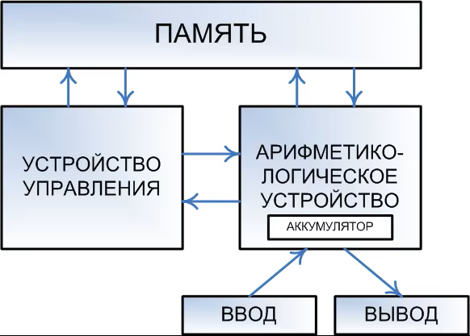
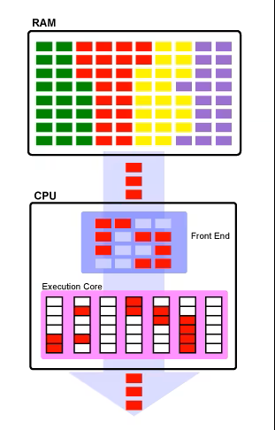
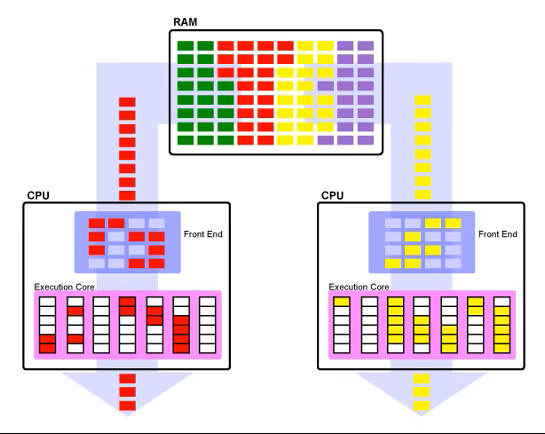
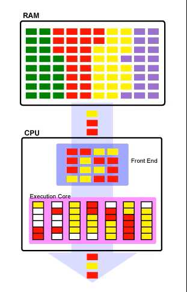
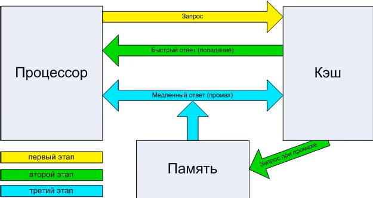
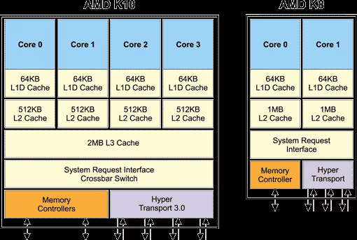
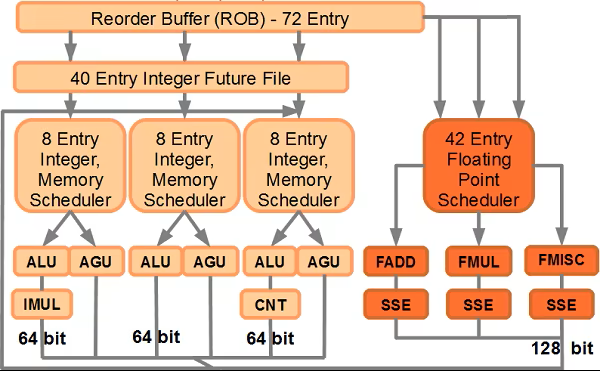
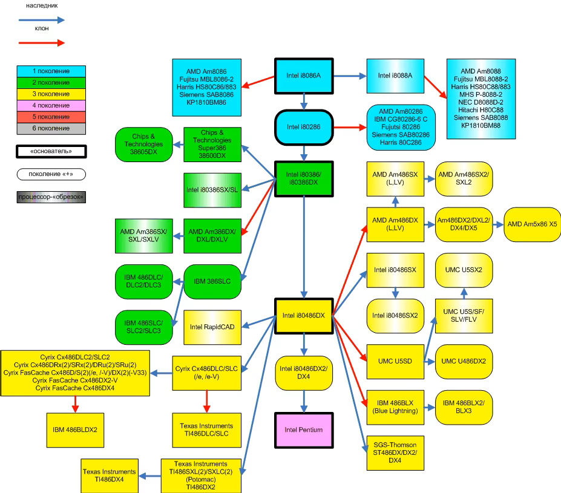
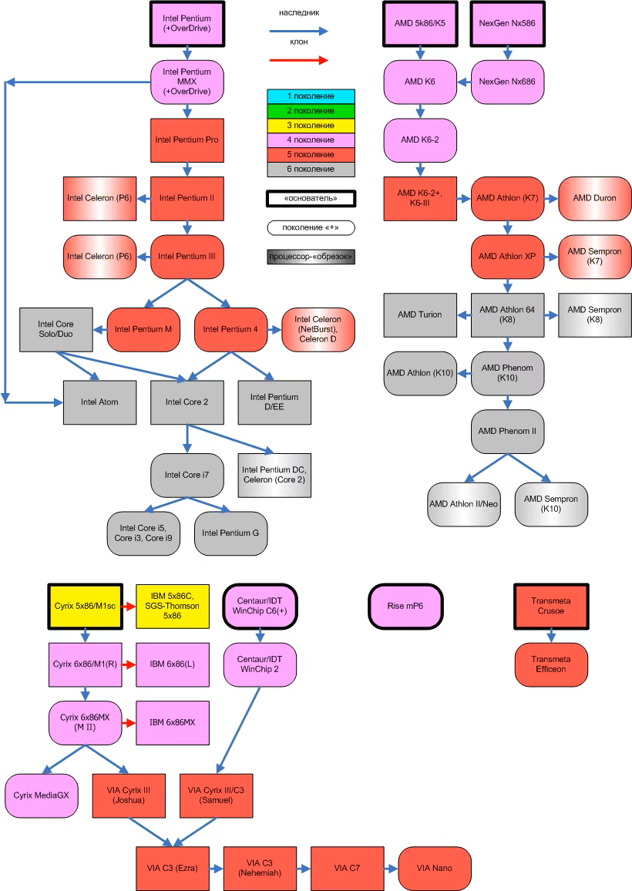

Этот материал представляет собой обновлённую, существенно переработанную и дополненную версию статьи 2006 года, которая называлась «Современные десктопные процессоры архитектуры x86: общие принципы работы (x86 CPU FAQ 1.0)». Правда, чтобы не вводить потенциальных читателей в заблуждение словом «FAQ», мы решили назвать новый материал более правильным, как нам кажется, термином — «дайджест». Действительно, ведь большая его часть — это не ответы на конкретные вопросы, а разъяснения и краткие выжимки из чего угодно — от технической документации до истории развития микропроцессорной отрасли. Для кого предназначен данный материал? Нам видятся две группы потенциальных читателей.
Первая — это те, кто вдруг обнаружил, что ему действительно интересно узнать, как работает современный x86-процессор. Для них мы попытались сосредоточить в рамках статьи максимальное количество полезных сведений, которые позволяют получить более-менее полное представление об этом процессе, даже не имея до этого (почти) никаких специальных знаний: здесь объясняется значение основных терминов, устройство современных CPU, принципы взаимодействия различных их составляющих между собой, а также процессора с компьютерной системой в целом.
Вторая группа — это те, кто не найдёт в статье почти ничего нового для себя — но им попросту лень писать нечто похожее самостоятельно, чтобы сосредоточить разбросанные по мозгу знания в одном месте, «причесать» их, систематизировать, упорядочить, осовременить, и так далее. Мы сами отлично понимаем, как бывает лениво писать конспекты :) (а особенно — хорошие конспекты), поэтому если наш дайджест вас устраивает — мы с радостью дарим вам возможность им пользоваться.
Ну и традиционное предупреждение: если иное не указано явно, то слово «процессор» в данном материале обозначает «x86(-64) процессор, предназначенный для установки в десктопы или (намного реже) мобильные компьютеры». Серверные процессоры, специализированные процессоры с архитектурой x86, всевозможные embedded-варианты — всё это в рамках статьи не рассматривается.
Любой компьютер как универсальный инструмент для работы с информацией устроен очень просто. Все его части можно разделить на 3 вида: устройства обработки, хранения и обмена (ввода-вывода), причём последние могут осуществлять обмен данными как между компьютером и человеком, так и между другими компьютерами. С информационной точки зрения больше ничего там нет, хотя учитывая, что компьютер — устройство электрическое, ему нужен источник питания, кабели и т.п., но это общая часть всей электроники. При этом каждый элемент сам делится на компоненты вышеперечисленных трёх видов. Например, процессор относится к устройствам обработки, но внутри себя имеет блоки собственно вычислений, локальной памяти и обмена. Большая часть пока ещё непонятных терминов именует конкретные детали процессора или методы их взаимодействий.
Если не пытаться изложить здесь «кратенько» курс информатики для средней школы, то единственное что хотелось бы напомнить — это то, что процессор (за редкими исключениями) исполняет не программы, написанные на каком-нибудь языке программирования (один из которых, вы, возможно, даже знаете), а так называемый машинный код. Т.е. командами для него являются последовательности байтов, находящихся в памяти компьютера, не имеющие ничего общего не только с каким-то человеческим языком, но и с языком программирования высокого уровня. Каждая команда занимает до нескольких байт, в среднем — 3-5. Там же, в основной памяти (ОЗУ, RAM) находятся и данные. Они могут находиться в отдельной области, а могут и быть перемешаны с кодом. Различие между кодом и данными состоит в том, что данные — это то, над чем процессор производит операции. А код — это команды, которые ему сообщают, какую именно операцию он должен произвести. Одновременно в памяти располагаются множество программ, необходимых им данных и некоторое свободное место.

Чтобы исполнить команду, процессор должен прочитать её из памяти. Чтобы произвести операцию над данными (а этого требует почти каждая команда), процессор должен прочитать их из памяти, и, возможно, после произведения над ними определённого действия, записать их обратно в память в обновлённом (изменённом) виде. Команды и данные идентифицируются их адресом, который представляет собой порядковый номер байта в памяти, с которого эти данные начинаются (если они занимают несколько байт).
Возможно, кого-то удивит, что достаточно большой раздел в «Дайджесте», посвящённом x86 CPU, выделен под объяснение особенностей функционирования памяти в современных системах, основанных на данном типе процессоров. Однако факты — упрямая вещь: сами x86-процессоры ныне содержат так много блоков, отвечающих именно за оптимизацию их работы с ОЗУ, что игнорировать эту тесную связь было бы совершенно нелепо. Можно сказать даже так: уж, коль решения, связанные с оптимизацией работы с памятью, стали неотъемлемой частью самих процессоров — то и саму память можно рассматривать в качестве некоего «придатка», функционирование которого оказывает непосредственное влияние на скорость работы CPU. Без понимания особенностей взаимодействия процессора с памятью, невозможно понять, за счёт чего тот или иной процессор (та или иная система) исполняет программы медленнее или быстрее.
Итак, ранее выше мы уже говорили о том, что как команды, так и данные, попадают в процессор из оперативной памяти. На самом деле всё немного сложнее. Ещё недавно в большинстве x86-систем (т.е. компьютеров на базе x86-процессоров), процессор к памяти обращаться сам не мог, т.к. не имел в своём составе соответствующих узлов. Некоторые не самые новые, но ещё популярные линейки процессоров (Intel Core 2, Celeron и Pentium всех видов) используют такую классическую организацию и сейчас. В этой схеме процессор обращается к «промежуточному» специализированному устройству, называемому контроллером памяти, а уже тот, в свою очередь — к микросхемам ОЗУ, размещенным на модулях памяти. Модули вы наверняка видели — это такие длинные узкие текстолитовые «планочки» (фактически — небольшие платы) с несколькими микросхемами на них, вставляемые в специальные разъёмы на системной плате. Роль контроллера ОЗУ, таким образом, проста: он служит своего рода «мостом» между памятью и использующими её устройствами (а это не только процессор, но об этом — чуть позже).
В традиционной схеме, контроллер памяти входит в состав чипсета — набора микросхем, являющегося основой системной платы. От быстродействия контроллера во многом зависит скорость обмена данными между процессором и памятью, это один из важнейших компонентов, влияющих на общую производительность компьютера. По «новой» схеме (к ней относятся процессоры Intel Core с буквой «i», и все ныне выпускаемые CPU AMD), контроллер памяти входит в состав самого процессора — теперь никаких посредников между памятью и процессором нет, так что общаться им оказывается проще и быстрее. Однако многочисленным устройствам ввода-вывода жизнь несколько усложнилась — им путь до памяти стал на один шаг длиннее, т.к. чипсет никуда не исчез (а лишь лишился контроллера памяти), и теперь обращаться к памяти требуется через процессор, отвлекая его от выполнения программ. Тем не менее, новая схема является прогрессивной, потому что процессору важнее всего получить доступ к памяти как можно быстрее, даже ценой некоторого усложнения доступа для других устройств — именно он является главным потребителем и производителем той информации, которая записана в памяти.
Любой процессор обязательно оснащён как минимум одной процессорной шиной, которую в среде x86 CPU иногда по старинке называют FSB (Front Side Bus), хотя современные процессоры имеют для неё разные названия (QPI для Intel и HyperTransport для AMD). В многопроцессорных платах таких шин несколько, и связаны они с другими процессорами и чипсетом. В домашних компьютерах, где процессор, как правило, один, шина у него единственная (не считая шины памяти, если в процессор встроен её контроллер) и связывает его с чипсетом, а через него — со всеми остальными устройствами.
На сегодняшний день вся память, используемая в современных десктопных x86-системах, имеет шину шириной 64 бита. Это означает, что за один такт по данной шине одновременно может быть передано количество информации, кратное 8 байтам (8 байт для SDR-шин, 16 байт для DDR-шин). Особняком стоит только память типа RDRAM, применявшаяся в системах на базе процессоров Intel Pentium 4 на заре становления архитектуры NetBurst, но сейчас это направление признано тупиковым для x86-ПК (к слову — руку к этому приложила всё та же компания Intel, которая в своё время активно пропагандировала данный тип памяти). Некоторую неразбериху вносят лишь многоканальные контроллеры, обеспечивающие одновременную работу с несколькими отдельными друг от друга 64-битными шинами. Применительно к 2-канальным котроллерам некоторые производители заявляют о «128-битности». Однако арифметика на уровне 1-го класса в данном случае работает с оговоркой: 2x64 равно 128 только когда все каналы работают одновременно. Т.е. N-канальный контроллер памяти теоретически может увеличить скорость работы с данными в N раз, но при этом ширина каждой шины памяти во всех современных контроллерах, применяемых в x86-системах по-прежнему равна 64 битам. На данный момент времени, одноканальный контроллер памяти можно смело назвать анахронизмом: все современные x86-системы оснащены как минимум 2-канальными контроллерами памяти, а некоторые — даже 3-канальными.
Скорость чтения и записи информации в память теоретически ограничивается исключительно пропускной способностью самой памяти. Так, например, двухканальный контроллер памяти стандарта DDR2-800 теоретически способен обеспечить скорость чтения и записи информации, равную 8 байт (ширина шины) * 2 (количество каналов) * 2 (протокол DDR, обеспечивающий передачу 2 пакетов данных за 1 такт) * 400'000'000 (фактическая частота работы шины памяти равная 400 МГц, т.е. 400 млн. тактов в секунду). Упомянем, что полученное произведение измеряется не в МБ/с (ГБ/с), а млн. (млрд.) байт/с, что несколько меньше честных двоичных «мега-» и «гига-». Даже с учётом этого, значения, получаемые в результате практических тестов, как правило, чуть ниже теоретических: сказывается «неидеальность» конструкции контроллера памяти, плюс накладки (задержки), вызванные работой подсистемы кэширования самого процессора (см. ниже раздел про процессорный кэш). Однако основной «подвох» содержится даже не в накладках, а в том, что скорость «линейного» чтения или записи является вовсе не единственной характеристикой, влияющей на фактическую скорость работы процессора с ОЗУ. Необходимо кроме линейной скорости считывания или записи учитывать ещё и такую характеристику, как латентность.
Латентность (она же — задержка) является не менее важной характеристикой с точки зрения быстродействия подсистемы памяти, чем скорость «прокачки данных». Большая скорость обмена данными хороша тогда, когда их размер относительно велик, но если нам требуется «понемногу с разных адресов» — то на первый план выходит именно латентность. Что это такое? В общем случае — время, которое требуется для того, чтобы начать считывать информацию с определённого адреса. И действительно: с момента, когда процессор посылает контроллеру памяти команду на считывание (запись), и до момента, когда эта операция осуществляется, проходит определённое время. Причём оно вовсе не равно времени, которое требуется на пересылку данных. Приняв команду на чтение или запись от процессора, контроллер памяти «указывает» ей, с каким адресом он желает работать. Доступ к любому произвольно взятому адресу не может быть осуществлён мгновенно. Возникает задержка: адрес указан, но память не готова предоставить к нему доступ, особенно если он указывает на слишком далёкое от предыдущей операции место (по разнице адресов). В общем случае, эту задержку и принято называть латентностью. У разных типов памяти она разная. Так, например, память типа DDR3 имеет в среднем большие задержки, чем DDR2 (при одинаковой частоте передачи данных). В результате, если данные в программе расположены «хаотично» и «небольшими кусками», либо метод считывания или записи совсем не последовательный, то скорость обмена становится намного менее важной, чем скорость доступа к «началу куска», т.к. задержки при переходе на очередной адрес влияют на быстродействие системы намного сильнее, чем скорость считывания или записи.
«Соревнование» между скоростью чтения (записи) и латентностью — одна из основных головных болей разработчиков современных систем: к сожалению, рост скорости чтения (записи) почти всегда приводит к увеличению латентности. Так, например, память типа DDR обладает в среднем лучшей (меньшей) латентностью, чем DDR2. В свою очередь, у DDR3 латентность ещё выше (то есть хуже), чем у DDR2. Правда, здесь следует хорошо понимать, каким образом следует правильно сравнивать латентность. Если вы интересовались данным вопросом, вам наверняка хорошо знакома строчка вида «4-4-4-12», обозначающая как раз величину задержек при выполнении некоторых операций. Задержки в данном случае указаны в тактах частоты, на которой работает память. В то же время, если нас интересует латентность как единица измерения скорости, то считать её нужно не в тактах, а в секундах. Именно на этом часто «прокалываются» не очень хорошо разбирающиеся в вопросе пользователи, не понимающие, почему латентность, к примеру, в 6 тактов, может быть меньше, чем латентность в 4 такта. А всё очень просто: например, если модуль памяти с латентностью в 6 тактов, работает на частоте 800 МГц, а модуль памяти с латентностью 4 — на частоте 400 МГц — то совершенно очевидно, что 6 тактов на частоте 800 МГц займут меньше времени, чем 4 на частоте 400.
Также следует понимать, что «общая» латентность подсистемы памяти зависит не только от неё самой, но и от контроллера памяти и места его расположения — все эти факторы тоже влияют на задержку. Именно поэтому компания AMD в процессе разработки архитектуры AMD64 решила «одним махом» решить проблему высокой латентности, интегрировав контроллер прямо в процессор — чтобы максимально «сократить дистанцию» между процессорным ядром и модулями ОЗУ. Затея удалась, но с подвохом: теперь система на базе процессора AMD может работать только с той памятью, на которую рассчитан контроллер процессора. Наверное, поэтому компания Intel долго не решалась на такой кардинальный шаг, предпочитая действовать традиционными методами: усовершенствуя контроллер памяти в чипсете и механизм предзагрузки в процессоре (про него см. ниже) — пока всё-таки не согласилась, что идея AMD выгодней.
В завершение заметим, что понятия «скорость чтения / записи» и «латентность», в общем случае, применимы к любому типу памяти — в том числе не только к классическому ОЗУ (SDR, Rambus, DDR, DDR2, DDR3, …), но и к кэшу (см. ниже).
Наверняка вы часто встречались с термином «x86», или «Intel-совместимый процессор» (или «IBM PC compatible» — но это уже по отношению к компьютеру). Иногда также встречается термин «Pentium-совместимый» (почему именно Pentium — вы поймете сами чуть позже). Что скрывается за всеми этими названиями? На данный момент наиболее корректно с точки зрения авторов выглядит следующая простая формулировка: современный x86-процессор — это процессор, способный корректно исполнять машинный код архитектуры x86-64 (архитектура 32-битных процессоров Intel, дополненная 64-битными расширениями от AMD). В первом приближении современный x86 — это код, исполняемый процессором i80386 (известным в народе как «386-й»), окончательно же основной набор команд 32-битной архитектуры IA32 сформировался с выходом процессора Intel Pentium Pro (с очень незначительным дополнениями в следующих процессорах). Что означает «основной набор» и какие есть еще? Для начала ответим на первую часть. «Основной» в данном случае означает то, что с помощью исключительно этого набора команд может быть написана любая программа для процессора архитектуры x86.
Кроме того, у архитектуры IA32 существуют «официальные» расширения (дополнительные наборы команд) от разработчика самой архитектуры, компании Intel: MMX, многочисленные SSE (вплоть до 4.2) и AVX. Также существуют «неофициальные» (не от Intel) расширенные наборы команд: EMMX, 3DNow!, Extended 3DNow!, SSE4.a и XOP — их разработала компания AMD. Впрочем, «официальность» и «неофициальность» в данном случае понятие относительное — де-факто всё сводится к тому, что некоторые расширения набора команд Intel как разработчик изначального набора признаёт, а некоторые — нет, разработчики же программного обеспечения используют то, что им лучше всего подходит. В отношении расширенных наборов команд существует правило хорошего тона: прежде чем их использовать, программа должна проверить, поддерживает ли их процессор. Иногда отступления от этого правила встречаются (и могут приводить к неправильному функционированию программ), но объективно это является проблемой некорректно написанной программы, а не процессора.
Для чего предназначены дополнительные наборы команд? В первую очередь — для увеличения быстродействия при выполнении наиболее частых операций. Одна команда из дополнительного набора, как правило, выполняет действие, для которого понадобилась бы небольшая процедура, состоящая из команд основного набора, причём специальная команда выполняется процессором быстрее, чем заменяющая её последовательность. Однако в 99% случаев ничего такого, чего нельзя было бы сделать с помощью основных команд, команды из дополнительного набора также не делают. Таким образом, упомянутая выше программная проверка поддержки дополнительных наборов команд процессором должна выполнять очень простую функцию: если, например, процессор поддерживает SSE — значит, считать будем быстро и с помощью команд из набора SSE. Если нет — будем считать медленнее, с помощью команд из основного набора. Корректно написанная программа обязана действовать именно так. Впрочем, сейчас практически никто не проверяет у процессора наличие поддержки MMX, т.к. все CPU, вышедшие за последние 10 лет, этот набор поддерживают гарантированно. Для справки приведём табличку, на которой обобщена информация о поддержке различных расширенных наборов команд различными десктопными (предназначенными для настольных ПК) и некоторыми мобильными процессорами.
| Процессор | Год выпуска | x86-64 | PPro | MMX | Версия SSE | 3DNow! |
|---|---|---|---|---|---|---|
| Процессоры Intel | ||||||
| Pentium | 1993 | |||||
| Pentium Pro | 1995 | x | ||||
| Pentium MMX | 1997 | x | ||||
| Pentium II | x | x | ||||
| Celeron | 1998 | x | x | |||
| Pentium III | 1999 | x | x | 1 | ||
| Pentium 4 | 2000 | x | x | 2 | ||
| Celeron | x | x | 1 | |||
| Celeron | 2002 | x | x | 2 | ||
| Pentium M | 2003 | x | x | 2 | ||
| Pentium 4 | 2004 | x | x | x | 3 | |
| Celeron D | x | x | 3 | |||
| Pentium D, EE | 2005 | x | x | x | 3 | |
| Celeron D | ||||||
| Celeron | 2006 | x | x | x | 3S | |
| Celeron M | x | x | 3 | |||
| Core Solo, Duo | ||||||
| Core 2 | x | x | 3S | |||
| Core 2 | 2007 | x | x | x | 4.1 | |
| Celeron M | x | x | x | 3S | ||
| Pentium (DC) | ||||||
| Pentium (DC, M) | x | x | 3 | |||
| Atom | 2008 | x | x | x | 3S | |
| Celeron (DC) | ||||||
| Core i7 | x | x | x | 4.2 | ||
| Core i3, i5 | 2009 | x | x | x | 4.2 | |
| Core i9 | 2010 | x | x | x | 4.2 | |
| Процессоры AMD | ||||||
| K5 | 1996 | |||||
| K6 | 1997 | x | ||||
| K6-3D, K6-2+ | 1998 | x | x | |||
| K6-III | 1999 | x | x | |||
| Athlon | x | x | x | |||
| Duron | 2000 | x | x | x | ||
| Athlon XP | 2001 | x | x | 1 | x | |
| Athlon 4 (M) | ||||||
| Duron | ||||||
| Athlon 64 | 2003 | x | x | x | 2 | x |
| Sempron | 2004 | x | x | 1 (2) | x | |
| Athlon XP-M | 2005 | x | x | 2 | x | |
| Sempron | x | x | x | 2 (3) | x | |
| Athlon (64) X2 | x | x | x | 3 | x | |
| Turion (M) | ||||||
| Sempron (M) | x | x | 3 | x | ||
| Phenom | 2007 | x | x | x | 4.a | x |
| Athlon X2 | 2008 | x | x | x | 4.a | x |
| Athlon Neo | 2009 | x | x | x | 3 | x |
| Phenom II | x | x | x | 4.a | x | |
| Athlon II, X3, X4 | ||||||
PPro — означает наличие всех общих команд. Версия SSE — номер последней поддерживаемой версии, подразумевая и все предыдущие (SSE, SSE2, SSE3, SSSE3, SSE4.1, SSE4.2). Для процессоров AMD наличие SSE4.a означает поддержку только SSE, SSE2, SSE3 и SSE4.a. (M) — мобильная модель. (DC) — двухядерный процессор.
На данный момент всё популярное десктопное программное обеспечение (операционные системы Windows и Linux, офисные пакеты, компьютерные игры, и прочее) разрабатывается именно для x86-процессоров. Оно выполняется (за исключением «дурно воспитанных» программ) на любом x86-процессоре, независимо от того, кто его произвёл. Поэтому вместо ориентированных на разработчика изначальной архитектуры терминов «Intel-совместимый» или «Pentium-совместимый», стали употреблять нейтральное название: «x86-совместимый процессор», «процессор с архитектурой x86». В данном случае под «архитектурой» понимается архитектура системы команд (ISA, Instruction Set Architecture) — совместимость с определённым набором команд с точки зрения программиста. Есть и другая трактовка того же термина.
«Железячники» — люди, работающие в основном не с программным обеспечением, а с аппаратным — под «архитектурой» понимают несколько другое (правда, более корректно то, что они называют «архитектурой», называется «микроархитектурой», но приставку «микро» частенько опускают). Для них «архитектура CPU» — это некий набор свойств, присущий целому семейству процессоров, как правило, выпускаемому в течение многих лет (иначе говоря — их организация и «внутренняя конструкция»). Например, любой специалист по x86 CPU вам скажет, что процессор с ALU, работающими на удвоенной частоте, QDR-шиной, Trace cache, и, возможно, поддержкой технологии Hyper-Threading — это «процессор архитектуры NetBurst» (не пугайтесь незнакомых терминов — все нужные будут разъяснены чуть позже). Таким образом, понятие «архитектуры» применительно к процессорам двойственно: под ним может пониматься как совместимость с единым набором команд, так и совокупность аппаратных решений, присущих определённой достаточно широкой группе процессоров.
В 2003 г. сначала AMD, а через год — и Intel, анонсировали практически идентичные технологии (впрочем, AMD предпочитает называть это архитектурой), благодаря которым классические x86 (IA32) CPU получили статус 64-битных. В случае с AMD данная технология получила наименование «AMD64», в случае с Intel — сначала «EM64T», а теперь Intel 64. Впрочем, сегодня часто указывают нейтральное «x86-64» — как общее обозначение всех 64-битных расширений архитектуры x86, не привязанное к зарегистрированным торговым маркам. Употребление одного из трёх приведённых наименований зависит больше от личных предпочтений употребляющего, чем от фактических различий — ибо различия между AMD64 и EM64T умещаются на кончике очень тонкой иглы. Так или иначе, всё сводится к следующему: все целочисленные регистры (общего назначения) стали вместо 32-битных 64-битными, число регистров (и общих, и векторных) удвоилось, 32-битные команды x86-кода получили свои 64-битные аналоги, а объём адресуемой памяти (и физической, и виртуальной) многократно увеличился (за счёт того, что логический адрес приобрёл вместо 32-битного 64-битный формат). Количество маркетинговых спекуляций на тему «64-битности» превысило все разумные пределы, поэтому следует рассмотреть достоинства данного нововведения.
Что не изменилось? В первую очередь — быстродействие процессоров. Вопиющей глупостью будет считать, что один и тот же процессор при переходе из привычного 32-битного в 64-битный режим (а 32-битный режим все нынешние x86 CPU поддерживают в обязательном порядке) станет работать вдвое быстрее. Разумеется, в некоторых случаях ускорение от использования 64-битной целочисленной арифметики может присутствовать — но количество этих случаев сильно ограничено, и большинства современного пользовательского программного обеспечения они никак не касаются. Кстати: а почему мы употребили термин «64-битная целочисленная арифметика»? А потому, что блоки операций с плавающей точкой (см. ниже) во всех x86-процессорах уже давным-давно не 32-битные. И даже не 64-битные. Классический вещественный вычислитель, окончательно ставший частью CPU ещё во времена старого доброго 32-битного Intel Pentium* — уже был 80-битным (и до сих пор таков). Векторные операнды команд SSE (с любой цифрой) — и вовсе 128-битные! В этом плане архитектура x86 достаточно парадоксальна: притом, что формально процессоры данной архитектуры достаточно долгое время оставались 32-битными — разрядность тех блоков, где «большая битность» была реально необходима — наращивалась совершенно независимо от остальных (более подробно о проблеме разрядности процессоров можно почитать в отдельном материале). Например, процессоры AMD Athlon XP и Intel Pentium 4 «Northwood» совмещали в себе блоки, работающие с 32-битными, 80-битными, и 128-битными операндами. 32-битными оставались лишь основной набор команд (унаследованный от первого процессора архитектуры IA32 — Intel 386) и адресация памяти (максимум 4 гигабайта, если не считать «эквилибристического выверта» от Intel — Physical Address Extension, позволявшего «32-битным» процессорам использовать 36(!)-битную адресацию).
* — первым x86 CPU, в который был интегрирован FPU (ранее он устанавливался на плату в качестве отдельного чипа), стал процессор предыдущего поколения — i486DX. Но в линейке i486 всё-таки присутствовал i486SX, в состав которого FPU не входил. Начиная с Pentium, Intel больше не выпускала x86 CPU без FPU, и эту моду быстро подхватили все остальные производители.Таким образом, то, что процессоры AMD и Intel стали «формально 64-битными», на практике принесло нам лишь три усовершенствования: появление команд для работы с 64-битными целыми числами, увеличение количества и/или разрядности регистров, и увеличение максимального объёма адресуемой памяти. Заметим: реальной пользы этих нововведений (особенно третьего!) никто не отрицает. Равно как никто не отрицает заслуг компании AMD в продвижении идеи «осовременивания» (за счёт введения 64-битности) x86-процессоров. Мы лишь хотим предостеречь от чрезмерных ожиданий: не стоит надеяться на то, что компьютер, покупавшийся «в ценовом классе ВАЗа», от установки 64-битного программного обеспечения станет «лихим Мерседесом». Чудес на свете не бывает...

Прежде, чем мы начнём описывать особенности многоядерных систем, нужно вначале объяснить, зачем вообще они нужны, и как за счёт большего количества ядер и/или процессоров может достигаться положительный эффект. В данном случае мы для простоты считаем, что система, собранная на базе одного процессора с двумя ядрами, практически идентична по функционалу системе на базе двух процессоров с одним ядром — если ядра в обоих случаях идентичны*. Более подробное разъяснение можно прочитать в отдельном, более сложном материале, но хотя бы схематически описать ситуацию просто необходимо. Всё нижесказанное относится к концепции SMP (Symmetric Multiprocessing, симметричная многопроцессорность), т.к. пока на x86 прижился именно этот вариант. Он требует, чтобы при любом числе процессоров (строго говоря — процессорных ядер) в системе они все были одинаковые, каждый может быть заменен любым другим, и все они осуществляют доступ к одному и тому же массиву памяти.
* — раньше многоядерный процессор на массовом рынке был мечтой практически неосуществимой, поэтому в тех отраслях, где требовалась высокая производительность в специфических задачах, использовались системы не многоядерные, а многопроцессорные. Вместо того, чтобы интегрировать N ядер в один чип — на системную плату устанавливали N разъёмов, и в них — N одноядерных процессоров. Условно, современный десктоп на N-ядерном процессоре, можно приравнять к N-процессорному серверу прошлых лет, если ядра и процессоры по архитектуре/микроархитектуре идентичны.Итак, зачем нужна многопроцессорность? Ответ очевиден: для параллельного исполнения нескольких задач (потоков). Многопроцессорные системы позволяют одновременно выполнять несколько программ — но при этом каждая из них получает только часть вычислительных ресурсов системы. Если система однопроцессорная — то при выполнении нескольких задач, они выполняются по очереди (т.е. для каждой из них выделяется часть процессорного времени). Если задача не требует полной вычислительной мощности (а таких большинство), то параллельное исполнение нескольких из них на многоядерном процессоре происходит без какого-либо заметного урона для каждой из них. Если же задача «тяжёлая» и использует все доступные ресурсы — то многоядерность позволяет «распределить» её между ядрами, сократив время выполнения.
Конечно, не все задачи можно «распараллелить». Дело в том, что большинство программ написаны так, что их части выполняются последовательно, а не параллельно. Однако современные операционные системы и приложения содержат множество задач, которые могут выполняться параллельно — например, фоновые процессы, обновление данных, шифрование и т.п. Поэтому многоядерность приносит пользу даже при выполнении «однопоточных» задач — за счёт выноса фоновых задач на свободные ядра.
Первое, что надо сказать о ядрах — в одном процессоре их бывает много. В вашем их, скорее всего, не менее двух, а вообще их может быть от 1 до 6 (скоро — и больше). Все ядра одинаковые, но кроме них в процессоре есть и обслуживающие их общие блоки — общий кэш, контроллер памяти и шины обмена с другими процессорами и/или с чипсетом. В новейших процессорах к этому списку скоро добавятся и специализированные ядра, например, для 3D-графики и декодирования видео. Когда говорят об устройстве ядер, то имеют в виду каждое ядро многоядерного процессора (даже если говорится «ядро» в единственном числе).

Как было сказано, у многоядерности есть ограничения по увеличению производительности. Когда задачи или их части выполняются параллельно, ядра конкурируют за доступ к общим блокам. Например, если запустить две задачи, сильно зависящие от пропускной способности памяти, и которым не хватит объёма кэша каждого ядра, то производительности общего для ядер кэша, а также контроллера памяти может быть недостаточно, чтобы насытить сразу два ядра. В результате они оба будут простаивать до половины времени — реальное увеличение скорости по сравнению с однопоточным исполнением может быть околонулевым. Противоположная ситуация, когда программы оптимизированы под многоядерные процессоры и не перегружают разделяемые ресурсы, выглядит примерно так: процессор исполняет столько потоков, сколько у него ядер, причём каждый поток в основном использует блоки своего ядра, а общение ядер между собой, а также с памятью достаточно редко, чтобы даже исполнение двукратного объёма задач не приводило к снижению быстродействия.
Технология Hyper-Threading (HT) от Intel — это попытка несколько «раздвинуть» ограничения многоядерности за счёт эмуляции дополнительного числа ядер. При включении HT одно физическое ядро представляется операционной системе как два «логических» — т.е. ОС «видит» вдвое больше процессоров, чем их есть на самом деле. Каждое такое «логическое ядро» может исполнять свой поток, но физически-то оно одно, и ресурсы приходится делить. Таким образом, выигрыш от HT оказывается highly dependent от конкретных задач: в одних случаях (когда потоки конкурируют за ресурсы) он может быть околонулевым или даже отрицательным, в других (когда один поток простаивает, ожидая данные из памяти, а другой может быть полезен) — существенным.

«Процессорное ядро» (как правило, для краткости его называют просто «ядро») — это конкретное воплощение (микро)архитектуры (т.е. архитектуры в «аппаратном» смысле), являющееся стандартом для целой серии процессоров. Например, K10 — это микроархитектура, которая лежит в основе многих сегодняшних процессоров AMD: Athlon II, Phenom, Phenom II, Opteron. Микроархитектура задаёт общие принципы: «средний» по длине конвейер, исполнение до трёх команд за такт, предсказание переходов и внеочередное исполнение, и прочие «глобальные» особенности. Ядро — более конкретное воплощение. Например, процессоры микроархитектуры K10 с двумя ядрами, без поддержки многопроцессорности и кэша L3, с шиной HyperTransport частотой в 2 ГГц — это более-менее полное описание ядра Regor для Athlon II.
Можно сказать что «ядро» — это конкретное воплощение определённой микроархитектуры «в кремнии», обладающее (в отличие от самой микроархитектуры) набором строго обусловленных характеристик. Микроархитектура — аморфна, она описывает общие принципы построения процессора. Ядро — микроархитектура, «обросшая» всевозможными параметрами и характеристиками. Чрезвычайно редки случаи, когда процессоры сменяли микроархитектуру, сохраняя название. И, наоборот, практически любое наименование процессора хотя бы несколько раз за время своего существования «меняло» ядро. Например, общее название серии процессоров AMD — «Athlon 64» — это одна микроархитектура (K8), но целых 13 ядер — от Sledgehammer (2003 г.) до Huron (2009 г.). Разные ядра, построенные на одной микроархитектуре, могут иметь в том числе разное быстродействие.
Ревизия — одна из модификаций ядра, крайне незначительно отличающаяся от предыдущей, почему и не заслуживает звания «нового ядра». Как правило, из выпусков очередной ревизии производители процессоров не делают большого события, это происходит «в рабочем порядке». Так что даже если вы покупаете один и тот же процессор, с полностью аналогичным названием и характеристиками, но с интервалом где-то в полгода — вполне возможно, фактически он будет уже немного другой. Выпуск новой ревизии, как правило, связан с какими-то мелкими усовершенствованиями. Например, удалось чуть-чуть снизить энергопотребление, понизить напряжение питания, что-то оптимизировать, или была устранена пара мелких (иногда не очень…) ошибок. С точки зрения производительности было всего пара примеров, когда бы одна ревизия ядра отличалась от другой настолько существенно, чтобы об этом имело смысл говорить. Хотя чисто теоретически возможен и такой вариант — например, подвергся оптимизации один из блоков процессора, ответственный за исполнение нескольких команд. Подводя итог, можно сказать что «заморачиваться» ревизиями процессоров чаще всего не стоит: в очень редких случаях изменение ревизии вносит какие-то кардинальные изменения.
Как правило, именно этот параметр в просторечии именуют «частотой процессора». Хотя в общем случае определение «частота работы ядра» всё же более корректно, так как совершенно не обязательно все составляющие CPU функционируют на той же частоте, что и ядро (наиболее частым примером обратного являлись старые «слотовые» x86 CPU — Intel Pentium II и Pentium III для Slot 1, AMD Athlon для Slot A — у них L2-кэш функционировал на 1/2, и даже иногда на 1/3 частоты работы ядра). Примерно также сегодня в большинстве процессоров работает кэш L3 — на своей отдельной частоте, меньшей, чем у каждого ядра. Ещё одним распространённым заблуждением является уверенность в том, что частота работы ядра однозначным образом определяет производительность. Это дважды не так.
Во-первых, каждое конкретное процессорное ядро (в зависимости от того, как оно спроектировано, сколько содержит исполняющих блоков различных типов, и т.д. и т.п.) может исполнять разное число команд за один такт, частота же — это всего лишь количество таких тактов в секунду. Таким образом (приведённое далее сравнение, разумеется, очень сильно упрощено) процессор, ядро которого исполняет 3 инструкции за такт, может иметь на треть меньшую частоту, чем процессор, исполняющий 2 инструкции за такт — и при этом обладать полностью аналогичным быстродействием.
Во-вторых, даже в рамках одного и того же ядра, увеличение частоты вовсе не всегда приводит к пропорциональному увеличению быстродействия. Здесь вам очень пригодятся знания, которые вы могли почерпнуть из раздела «Общие принципы взаимодействия процессора и ОЗУ». Дело в том, что скорость исполнения команд ядром процессора — это вовсе не единственный показатель, влияющий на скорость выполнения программы. Не менее важна скорость поступления команд и данных на CPU. Представим себе чисто теоретически такую систему: быстродействие процессора — 10'000 команд в секунду, скорость работы памяти — 1000 байт в секунду. Если увеличить частоту процессора вдвое (до 20'000 команд в секунду), но оставить скорость памяти прежней — выигрыш в производительности будет far от двукратного. Более того, при очень сильном ускорении ядра относительно памяти, оно будет большую часть времени простаивать, ожидая данные — и тогда выигрыш будет околонулевым. Именно поэтому производители процессоров стараются не просто наращивать частоту, но и совершенствовать все прочие составляющие — кэш, контроллер памяти, конвейер и т.д.
Виртуализация в вычислительной технике — это возможность запускать несколько операционных систем (и программы из-под каждой из них) так, что они будут работать будто бы на своих отдельных компьютерах (т.е. подразумевается виртуализация «железа» по отношению к программам). Впервые она появилась аж в 60-е годы на мейнфреймах IBM и до недавнего времени была полезна лишь для программирования и высокопроизводительных сетевых серверов. Однако новая ОС фирмы Microsoft Windows 7 уже требует аппаратную поддержку виртуализации в процессоре, если предполагается запускать 32-битные программы, написанные для Windows XP и более ранних версий (т.е. читай — всегда). Так зачем нужна эта аппаратная поддержка, если ранее и программной справлялись?
Аппаратная поддержка виртуализации в процессоре фактически означает наличие дополнительного поднабора команд, который позволяет инициировать, вызвать, завершать и переключать виртуальные ОС быстрее и с более надёжной изоляцией друг от друга (что важно для устойчивости и безопасности всей системы), чем программными средствами. Как обычно, оба главных производителя CPU стараются подчеркнуть преимущества своих реализаций, так что им даны разные имена: Intel Virtualization Technology (Intel VT) и AMD Virtualization (AMD-V). Причём между ними действительно есть небольшая разница, но, опять же, крайне незначительная и не приводящая к несовместимости. С точки зрения пользователя вердикт прост — поддержку виртуализации в процессоре лучше иметь, чем не иметь, т.к. даже если она не пригодится сейчас, то, возможно, пригодится через пару лет, а разница в стоимости у процессоров с и без неё почти незаметна. Более того — в новых CPU виртуализацию поддерживают все модели, так что «хочешь, не хочешь»…
Раньше, когда небо было голубее, пиво — вкуснее, а девушки — красивее (прим. ред.: мнение редакции не всегда совпадает с мнением авторов, особенно насчёт девушек), процессоры называли просто: имя производителя + название модельного ряда («линейки») + частота. Например: «AMD K6-2 450 MHz». В настоящее время оба основных производителя от этой традиции отошли и вместо частоты употребляют какие-то непонятные циферки, обозначающие невесть что. Если вам нужно узнать основные характеристики какого-то процессора, проще всего просто набрать его полное имя в Гугле или Яндексе, и среди первой десятки результатов вы наверняка найдёте краткое описание его внутренностей. Если же требуется сравнить разные процессоры, названия которых вы не помните или не знаете, подойдёт Википедия.
Никак это не возможно, потому что скорость не измеряется в мегагерцах, как не измеряется расстояние в килограммах. Однако господа маркетологи давно уже поняли, что в словесном поединке между физиком и психологом побеждает всегда последний — причём независимо от того, кто на самом деле прав. Поэтому мы и читаем про «сверхбыструю 1066-мегагерцевую шину», мучительно пытаясь понять, как скорость может измеряться с помощью частоты. На самом деле, раз уж прижилась такая извращённая тенденция, нужно просто чётко представлять себе, что имеется в виду. А имеется в виду следующее: если мы «закрепим» ширину шины на N битах — то её пропускная способность действительно будет зависеть от того, на какой частоте данная шина функционирует, и какое количество данных она способна передавать за такт.
По обычной процессорной шине с «одинарной» скоростью (такая шина была, например, у процессора Intel Pentium III) за такт передаётся 64 бита, то есть 8 байт. Соответственно, если рабочая частота шины равна 100 МГц (100'000'000 тактов в секунду) — то скорость передачи данных будет равна 8 байт × 100'000'000 герц ≈ 763 мегабайта в секунду (а если считать в «десятичных мегабайтах», в которых принято считать потоки данных, то ещё красивее — 800 мегабайт в секунду). Соответственно, если на тех же 100 мегагерцах работает DDR-шина, способная передавать за один такт удвоенный объём данных — скорость вырастет ровно вдвое. Поэтому, согласно парадоксальной логике господ маркетологов, данную шину следует именовать «200-мегагерцевой». Хотя реальная частота работы у вышеописанных шин одинаковая — 100 мегагерц. Вот так «мегагерцы» и стали синонимом скорости.
Как уже было сказано, в режиме DDR по шине за один такт передаётся удвоенный объём информации. Правда, в документах, ориентированных больше на прославление достижений производителей, чем на объективное освещение реалий, почему-то не всегда указывают одно маленькое «но»: режимы удвоенной скорости включаются только при пакетной передаче данных, а она всегда включена не во всех типах шин. Т.е. если мы запросили из памяти парочку мегабайтов с адреса X по адрес Y — то да, эти два мегабайта будут переданы с удвоенной скоростью. А вот сам запрос на данные может быть передан по шине и с «одинарной» скоростью! Соответственно, если запросов у нас много, а размер пересылаемых данных не очень велик, то количество данных, которые «путешествуют» по шине с одинарной скоростью (а запрос — это тоже данные) будет почти равно количеству тех, которые передаются со скоростью удвоенной.
Новые шины — HyperTransport (она же — HT, но не путайте с HyperThreading) для процессоров AMD и QPI для Intel. У новичков есть четыре главных особенности, отличающие их от предыдущих решений: эти шины уже (как правило, 32 бита), в несколько раз быстрее по частоте, могут соединять только 2 устройства (на старые шины можно «повесить» и более) и, самое интересное, — они полнодуплексные. Т.е. фактически состоят из двух разнонаправленных половинок, позволяющих одновременно передавать данные в обе стороны. Так что для оценки скорости надо различать три цифры: частота работы шины (как правило, в спецификациях указывается именно она), количество передач данных в одном направлении (вдвое больше частоты за счёт DDR) и число совокупных передач данных в обоих направлениях (ещё вдвое больше).
У любого процессора есть не только интерьер, но и экстерьер — «одёжка», по которой его встречают. Не пользователи, конечно, а коллеги-компоненты по компьютеру. Чтобы процессор вообще заработал, требуется соблюсти несколько важных пунктов.
Во-первых, у процессора есть корпус определённого размера с определённым количеством выводов в определённом расположении — всё это должно точно подходить к разъёму для CPU на материнской плате (компактные процессоры для неттопов и нетбуков продаются вместе с мат. платами сразу запаянные в них). Тип разъёма (сокета) обозначается буквой или числом выводов. Для каждого процессора указывается тот разъём, который для него подходит. Причём «подходит» означает не только механическую совместимость (т.е. процессор физически умещается в разъёме в единственно верном положении, обозначенном специальной меткой-ключём), но и электрическую, силовую и интерфейсную.
Во-вторых, BIOS (загрузочная программа, стартующая сразу после включения компьютера и записанная в микросхеме флеш-памяти на материнской плате) ожидает обнаружить лишь те виды процессоров, которые в него заложили разработчики системной платы. Но если ваш новый процессор вышел позже, то для поддержки всех его функций придётся обновить и сам BIOS, новую версию которого («прошивку») нужно загрузить с сайта производителя материнской платы, убедившись, что в ней есть поддержка новинки.
В-третьих, процессору нужна система охлаждения. Упоминавшиеся выше 100+ ватт тепловыделения — это не шутки: без соответствующего «радиатора» (металлического блока с рёбрами, отводящими тепло) и вентилятора (для обдува радиатора) процессор может выйти из строя за считаные секунды. Современные процессоры, конечно, защищены от мгновенного выхода из строя благодаря встроенным датчикам температуры и автоматическому снижению частоты/напряжения при перегреве, однако длительная работа при повышенных температурах всё равно сокращает срок службы CPU и снижает стабильность. Поэтому выбор правильного кулера для процессора очень важен — особенно для любителей разгона и пользователей мощными процессорами.

Во всех современных процессорах есть кэш (cache). Это разновидность памяти (кардинальные отличия кэша от ОЗУ — скорость работы и меньшая задержка доступа), которая является своего рода «буфером» между контроллером памяти и процессором и служит для увеличения скорости работы с ОЗУ. Чтобы объяснить, сразу откажемся от попахивающих детским садом сравнений, которые частенько встречаются в популяризаторской литературе на процессорную тематику (бассейны, соединённые трубами разного диаметра, и т.д. и т.п.). Всё-таки человек, который дочитал статью до этого места и не заснул, наверное, способен выдержать и «переварить» чисто техническое объяснение.
Итак, представим, что у нас есть много сравнительно медленной памяти (пусть это будет ОЗУ размером 1 мегабайт) и относительно мало очень быстрой (пусть это будет кэш размером всего 1 килобайт). Как нам с помощью этого несчастного килобайта увеличить скорость работы со всей памятью вообще? А вот здесь следует вспомнить, что данные в процессе работы программы, как правило, не бездумно перекидываются с места на место — они изменяются. Считали из памяти значение какой-то переменной, прибавили к нему какое-то число — записали обратно на то же место. Считали массив, отсортировали по возрастанию — опять-таки записали в память. Т.е. в каждый момент программа работает не со всей памятью, а, как правило, с относительно маленьким её фрагментом. Напрашивается решение — загрузить этот фрагмент в «быструю» память, обработать его там, а потом уже записать обратно в «медленную» (или просто удалить из кэша, если данные не изменялись).
В общем случае, именно так и работает процессорный кэш: любая считываемая из памяти информация попадает не только в процессор, но и в кэш. И если эта же информация нужна снова, сначала процессор проверяет: нет ли её в кэше? Если есть — берёт оттуда (это намного быстрее, чем читать снова из ОЗУ), если нет — загружает нужный участок памяти в кэш и уже потом считывает. Причём кэш работает прозрачно для программиста (и для программы) — она не «знает» о наличии кэша и считывает данные напрямую из памяти. Однако скорость выполнения программы при этом значительно возрастает за счёт того, что повторные обращения к одним и тем же данным (а таковые в большинстве программ составляют львиную долю всех обращений к памяти) происходит из быстрого кэша, а не из медленного ОЗУ.

Специфика конструирования современных процессорных ядер привела к тому, что систему кэширования в подавляющем большинстве CPU приходится делать многоуровневой. Кэш первого уровня (самый «близкий» к ядру) традиционно разделяется на две (как правило, равные) части: кэш инструкций (L1I) и кэш данных (L1D). Это разделение предусматривается так называемой «гарвардской архитектурой» процессора, которая по состоянию на сегодня является самой популярной теоретической основой для построения современных CPU. В L1I, соответственно, аккумулируются только команды (с ним работает декодер), а в L1D — только данные (они впоследствии, как правило, попадают во внутренние регистры процессора).
Иерархически «над» L1 стоит кэш второго уровня — L2. Он, как правило, в 2-8 раз больше по объёму, примерно втрое медленнее, и является уже «смешанным» — там располагаются и команды, и данные. В первых многоядерных процессорах у каждого ядра были свои L1, но общий L2. Сегодня у каждого ядра есть свой L2, зато общим для всех ядер является L3 (кэш третьего уровня), который в 4-32 раза больше, чем L2, и ещё примерно втрое медленнее (но всё ещё быстрее памяти). Алгоритм работы с многоуровневым кэшем в общих чертах не отличается от алгоритма работы с одноуровневым, просто добавляются дополнительные итерации: сначала информация ищется в L1, если там промах — в L2, потом — в L3, и уже потом, если ни на одном уровне кэша она не найдена — идёт обращение к основной памяти (ОЗУ).
На самом деле, исполнительные блоки всех современных десктопных x86-процессоров вовсе не работают с кодом в стандарте x86. У каждого процессора есть своя, «внутренняя» система команд, имеющая мало общего с теми командами (тем самым «кодом»), которые поступают извне. В общем случае, команды, исполняемые ядром — намного проще, «примитивнее», чем команды стандарта x86. Чтобы процессор с точки зрения программиста или пользователя «внешне выглядел» как x86 CPU, существует декодер: этот блок отвечает за преобразование «внешнего» x86-кода во «внутренние» команды, исполняемые ядром (при этом достаточно часто одна команда x86-кода преобразуется в несколько более простых «внутренних»). Декодер является важной частью современного процессора: от его быстродействия зависит то, насколько постоянным будет поток команд, поступающих на исполняющие блоки.
Регистры — по сути, те же ячейки памяти, но «территориально» они расположены прямо в процессорном ядре. Разумеется, скорость работы с регистрами намного больше не только скорости работы с ОЗУ, но и с кэшами любого уровня. Поэтому большинство команд архитектуры x86 предусматривают осуществление действий именно над содержимым регистров, а не над содержимым памяти. Однако общий объём регистров процессора, как правило, очень мал — он не сравним даже с объёмом кэшей первого уровня и составляет всего сотни байт. Поэтому код программы обычно содержит примерно такую последовательность операций: загрузить в регистры процессора информацию из ОЗУ, произвести некое действие над содержимым этих регистров, поместив результат туда же, в регистры, а потом снова выгрузить результат в основную память.
Пройдя через все уровни кэша, декодер и некоторые подготовительные модули, команды наконец-то попадают в те блоки, ради которых вся эта катавасия и устраивалась: функциональные (исполняющие) устройства (ФУ). По сути, именно они и являются единственно необходимым элементом процессора. Можно обойтись без кэша — скорость снизится, но программы работать будут. Можно обойтись без декодера — исполняющие устройства станут сложнее, но работать процессор будет. А без функциональных устройств обойтись невозможно, ибо именно они исполняют операции над данными.
Разных ФУ бывает много, но самые главные из них — арифметико-логические устройства (ALU), блоки вычислений с плавающей точкой (FPU), блоки векторной обработки (SIMD — таково общее название концепции векторных вычислений, означающее «одна команда, много данных») и блоки обмена данных с памятью. Каждое ФУ может исполнить только те команды, которые предназначены для него. Распределением команд, поступающих с декодера, по различным исполняющим устройствам занимается специальный блок-планировщик.
ALU (если не указано иное, то подразумевается именно целочисленный блок) традиционно отвечают за самые частые операции: простые арифметические действия (сложение, вычитание, сравнение) с целыми числами, логические операции («и», «или», «исключающее или» и «не»), копирование и простые преобразования чисел, а также битовые сдвиги. Блоков ALU в современных процессорах, как правило, 3. Для чего — вы поймёте позже, прочитав раздел «Суперскалярность и внеочередное исполнение команд».
Внимательный читатель заметит, что выше не указаны ещё некоторые команды с целыми числами, которые, вроде бы должны быть исполнены в АЛУ. Например — умножение. Однако всё не так просто. Дело в том, что число и разнообразие функциональных устройств зависит от частоты встречи разных команд. Т.к. команды сложения, вычитания и копирования среди целых чисел наиболее «популярны», имеет смысл делать несколько АЛУ, исполняющих именно их, а вот целочисленное умножение, и, тем более, деление встречается куда реже, поэтому целочисленный умножитель почти во всех процессорах один (иногда — универсальный, в т.ч. и для вещественных чисел), а делителя нет вообще (эта операция делается в умножителе с использованием специальных таблиц констант для ускорения деления).
FPU занимается выполнением команд, работающих с числами с плавающей запятой, кроме того, традиционно на него «вешают всех собак» в виде дополнительных наборов команд для работы с векторными данными (MMX и SSE с разными цифрами) — независимо от того, работают они с числами с плавающей запятой, или с целыми. Этих ФУ также 3-4, но тут расклад сил несколько иной — как правило, каждый блок умеет делать копирование данных, но только 2 или 3 исполняют простые команды (как у целочисленного АЛУ — их иногда называют SIMD ALU или SSE ALU), только один — умножение и деление, и ещё один — всё остальное (перетасовки элементов вектора, сложные преобразования форматов данных и пр.).
Тут есть 3 вида модулей — 2-3 так называемых AGU или устройства генерации адреса, подготавливающие адрес операции обмена, и по одному блоку загрузки и сохранения (выгрузки), соединённых с кэшем данных первого уровня. Тут всё просто — готовим адрес, а затем либо пишем данные из регистра в кэш, либо наоборот — читаем из кэша в регистр.
Помимо вычислительных «наворотов», у современных CPU есть ещё и различные технологии для уменьшения потребления энергии. Причём это касается процессоров не только для мобильных устройств, но и для настольных ПК, и даже серверов. Дело в том, что уменьшение потребления электроэнергии также приводит к уменьшению тепловыделения, которое за последние годы сильно выросло — ещё 10 лет назад было трудно себе представить, что средний процессор будет потреблять электричества и выделять тепла под 100 ватт, а то и больше. Системы охлаждения всё чаще становятся слишком дорогими и шумными, притом, что это один из самых ненадёжных узлов компьютера, требующий регулярного ухода.
Такими мерами стали технологии регулировки потребления энергии в зависимости от требуемой загрузки процессора. Для Intel это называется SpeedStep, для AMD — Cool'n'Quiet и PowerNow! (плюс номер версии). Анализируя загрузку различных блоков и шин, контроллер энергосбережения может снизить их частоту работы (для компонентов, которые могут работать несинхронно) или приостановить тактирование полностью, а также указать материнской плате понизить питающее напряжение (тоже — не всего процессора, а отдельного ядра или блока, хотя и не каждого). Регулировка напряжений особенно эффективна, т.к. от него потребляемая и выделяемая мощность зависит больше. Однако и частота, и напряжение не могут упасть до нуля: реально частота падает в 2-3 раза относительно максимума, а напряжение — процентов на 20-30.
Во всех современных x86 CPU кэши L1 и L2 работают на той же частоте, что и процессорное ядро, но это вовсе не всегда было так (данный вопрос уже поднимался выше). Однако скорость работы с кэшем зависит не только от частоты, но и от ширины шины, с помощью которой он соединён с ядром. Как вы помните, скорость передачи данных является произведением частоты работы шины (количества тактов в секунду) на количество байт, которые передаются по шине за такт. Это количество можно увеличивать за счёт введения технологии DDR (Double Data Rate) и/или за счёт увеличения ширины шины.
В случае с кэшем более популярен второй вариант — не в последнюю очередь из-за «пикантных особенностей» DDR, описанных выше. Более того, можно поставить сразу две параллельные шины, передающие данные в разные стороны — т.е. преобразовав шину в двунаправленную (полнодуплексную) удвоенной ширины. Споры о том, какой из подходов лучше (двунаправленная шина, но более узкая в каждом направлении, или однонаправленная широкая) — продолжаются до сих пор, как и множество других споров относительно технических решений, применяемых двумя основными конкурентами на рынке x86 CPU.
Концепции эксклюзивного и не эксклюзивного кэширования очень просты: в случае не эксклюзивного кэша, информация на всех уровнях кэширования может дублироваться. Таким образом, L2 может содержать в себе данные, которые уже находятся в L1I и L1D, а L3 может содержать в себе полную копию всего содержимого L2 (и, соответственно, L1I и L1D). Эксклюзивный кэш, в отличие от не эксклюзивного, предусматривает чёткое разграничение: если информация содержится на каком-то уровне кэша — то на всех остальных она отсутствует.
Плюс эксклюзивного кэша очевиден: общий размер кэшируемой информации равен суммарному объёму кэшей всех уровней — а у не эксклюзивного кэша размер кэшируемой информации (в худшем случае) равен объёму самого большого (по размеру и по номеру) уровня кэша. Минус эксклюзивного кэша менее очевиден, но он есть: необходим специальный механизм, который следит за собственно «эксклюзивностью» (например, «удаление» информации из L1 фактически инициирует процесс её копирования в L2).
Не эксклюзивный кэш традиционно использует компания Intel, эксклюзивный (с момента появления процессоров Athlon на ядре Thunderbird) — компания AMD. В целом, мы наблюдаем здесь классическое противостояние между объёмом и скоростью: за счёт эксклюзивности, при одинаковых объёмах L1/L2 у AMD общий размер кэшируемой информации получается больше — но за счёт неё же он работает медленней (задержки, вызванные наличием механизма обеспечения эксклюзивности). Следует заметить, что недостатки не эксклюзивного кэша Intel компенсирует просто, но весомо: наращивая его объёмы.

Основная черта всех современных процессоров состоит в том, что они способны запускать на исполнение не только ту команду, которую (согласно коду программы) следует исполнить в данный момент времени, но и другие «вблизи» неё. Приведём простой (канонический) пример. Пусть нам следует исполнить следующую последовательность команд:
Легко заметить, что команды (1) и (2) совершенно независимы друг от друга — они не пересекаются ни по исходным данным (переменные B и C в первом случае, X и Y во втором), ни по месту размещения результата (переменная A в первом случае и Z во втором). Стало быть, если на данный момент у нас есть свободные исполняющие блоки в количестве более одного, данные команды можно распределить по ним, и выполнить одновременно, а не последовательно*. Таким образом, если принять время исполнения каждой команды равным N тактов процессора, то в классическом случае исполнение всей последовательности заняло бы N×3 тактов, а в случае с параллельным исполнением — всего N×2 тактов (так как команду (3) нельзя выполнить, не дождавшись результата исполнения двух предыдущих).
На самом деле, всё ещё сложнее. Так, если у нас имеется следующая последовательность:
То очередь исполнения команд процессором будет изменена! Т.к. команды (1) и (3) независимы друг от друга ни по исходным данным, ни по месту размещения результата, они могут быть выполнены параллельно, а вот команда (2) зависит от (1), и потому должна быть выполнена после неё. В результате,несмотря на то, что в коде порядок команд (1)-(2)-(3), процессор фактически может выполнить их в порядке (1)-(3)-(2) или (3)-(1)-(2) — в зависимости от того, какой блок становится свободным первым. Эта способность называется "внеочередное исполнение команд" (Out-of-Order Execution) и является одной из ключевых технологий, повышающих производительность современных процессоров.
Современные процессоры используют технику предварительного (опережающего) декодирования и кэширования для ускорения выполнения программ. Суть проста: пока текущий блок команд выполняется, процессор заранее декодирует и загружает в кэш следующие блоки кода. Это позволяет сократить простои исполнительных блоков, которые иначе были бы вынуждены ждать, пока новые команды будут загружены и декодированы.
Предварительное кэширование работает аналогично: анализируя паттерны доступа к данным, процессор может заранее загрузить в кэш те участки памяти, которые вероятнее всего понадобятся в ближайшем будущем. Это особенно эффективно при последовательном чтении данных (массивы, структуры данных), когда процессор может с высокой точностью предсказать, какие данные понадобятся следующими.
В любой более-менее сложной программе присутствуют команды условного перехода: «Если некое условие истинно — перейти к исполнению одного участка кода, если нет — другого». С точки зрения скорости выполнения кода программы современным процессором с большим числом подготовительных стадий и собственно исполнением (так называемый исполнительный конвейер), любая команда условного перехода — воистину бич божий. Ведь до тех пор, пока не станет известно, какой участок кода после условного перехода окажется «актуальным» — его невозможно начать декодировать и исполнять.
Для того чтобы как-то примирить концепцию «длинных» конвейеров с командами условного перехода, предназначается специальный блок: блок предсказания ветвлений. Занимается он, по сути, «пророчествами»: пытается предсказать, на какой участок кода укажет команда условного перехода, ещё до того, как она будет исполнена, и сработает ли переход вообще. В соответствии с указаниями «штатного внутриядерного пророка», процессором производятся вполне реальные действия: «напророченный» участок кода загружается в кэш (если он там отсутствует), и начинается декодирование и выполнение его команд.
Алгоритмы, по которым работает блок предсказания ветвлений, вовсе не являются шедеврами искусственного интеллекта. Когда процессор впервые встречает условный переход, он пытается предсказать его поведение «по одёжке» — какого типа команда, куда происходит переход (вперёд по ходу исполнения программы или назад — это если он вообще произойдёт) и пр. Точность такого предсказателя (он называется статическим) невелика. Самое интересное происходит, когда условный переход выполняется повторно — тогда вступает в дело «динамический» предсказатель, который анализирует историю выполнения данного перехода и на основании статистики делает предположение. Если, например, в 9 из 10 случаев переход «срабатывал», то с вероятностью 90% предсказатель будет утверждать, что он сработает и в следующий раз.
Блок предвыборки данных (Prefetch) очень похож по принципу своего действия на блок предсказания ветвлений — но в данном случае речь идёт не о коде, а о данных. Общий принцип действия такой же: предзагрузчик (префетчер) анализирует запросы к данным, решает, что к некоему участку памяти, ещё не загруженному в кэш или ядро, скоро будет осуществлён доступ — и заранее даёт команду на загрузку данного участка ещё до того, как он понадобится программе.
«Умно» (результативно) работающий блок предвыборки позволяет существенно сократить время доступа к нужным данным, и, соответственно, повысить скорость исполнения программы. Он хорошо компенсирует высокую латентность подсистемы памяти, подгружая нужные данные поближе к ядру или сразу в него, и тем самым, нивелируя задержки при доступе к ним, если бы они находились не в кэше, а в основном ОЗУ.
Разумеется, в случае предвыборки неизбежны негативные последствия: загружая ненужные (как позже окажется) данные в кэш, Prefetch вытесняет из него другие (быть может, как раз нужные). Кроме того, за счёт «предвосхищения» операции считывания, создаётся дополнительная нагрузка на контроллер памяти (причём в случае ошибки — совершенно бесполезная). Алгоритмы Prefetch, как и алгоритмы блока предсказания ветвлений, тоже не блещут интеллектуальностью: как правило, данный блок стремится отследить, не считывается ли информация из памяти с определённым «шагом» (по адресам), и на основании этого анализа пытается предсказать, с какого адреса будут считываться данные далее. Как и в случае с блоком предсказания ветвлений, простота алгоритма вовсе не означает низкую эффективность: в среднем, блок предвыборки чаще «попадает», чем ошибается.
Также, для справки, мы решили включить в данный материал своего рода «генеалогическое древо» всех десктопных x86-процессоров, т.к. оно наглядно демонстрирует, как развивалась архитектура x86 на протяжении более чем 30-летней истории. Ниже приведена упрощённая схема, показывающая основные ветви эволюции процессоров Intel и AMD.

Intel: 8086 → 80286 → 80386 → 80486 → Pentium → Pentium Pro → Pentium II → Pentium III → Pentium 4 → Pentium M → Core → Core 2 → Core i7 (Nehalem)

AMD: Am286 → Am386 → Am486 → K5 → K6 → K6-2 → K6-III → Athlon (K7) → Athlon XP → Athlon 64 (K8) → Athlon 64 X2 → Phenom (K10) → Phenom II
Вполне возможно, чувства, которые у вас возникли после прочтения данной статьи, можно описать примерно так: «Вместо того, чтобы на пальцах объяснить, какой процессор лучше — взяли и загрузили мне мозги кучей специфической информации, в которой ещё разбираться и разбираться, и конца-края не видно!» Вполне нормальная реакция, мы вас хорошо понимаем. Скажем даже больше: если вы думаете, что мы сами можем ответить на этот простецкий вопрос («какой процессор лучше?») — это не так. Не можем*. Для одних задач лучше один, для других — другой, а тут ещё цена разная, доступность, симпатии конкретного пользователя к определённым маркам… Не имеет задача однозначного решения.
* — примечание одного из авторов: «Лучший процессор — мой процессор!» :)Хотелось бы подчеркнуть ещё раз: даже полностью усвоив и осмыслив всю информацию, изложенную в данном материале — вы по-прежнему не сможете предсказать, какой из двух процессоров будет быстрее в ваших задачах, глядя только на их характеристики. Во-первых — потому, что далеко не все характеристики процессоров здесь рассмотрены. Во-вторых — потому, что есть и такие параметры CPU, которые в числовом виде могут быть представлены только с очень большой «натяжкой». Так для кого же (и для чего) всё это написано? В основном — для тех самых «кроликов», которые непременно желают знать, что происходит внутри тех устройств, которыми они пользуются ежедневно. Зачем? Может, они просто лучше себя чувствуют, когда знают, что вокруг них происходит? :)
P.S. Захотелось ещё подробнее? Вам поможет «Процессор: полный опус» — оригинальная статья, по мотивам которой создан данный материал.
В начало Содержание Оригинал